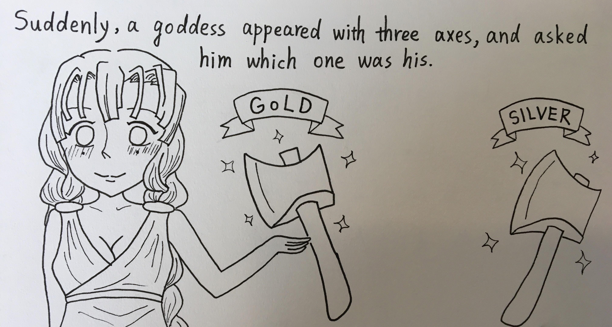

Once upon a time in a small village by the woods, there lived a woodcutter. He was hardworking with a simple daily routine. He wakes up in the afternoon, takes a shit and straight up goes to the nearby woods to chop trees. He had chopped over a million trees by now and was solely responsible for destroying the nearby forest to the verge of extinction. However, it was beneficial for the villagers. They do not have to pay a visit to the zoo to see wild animals now. All of this came at a small negligible cost of the animals sometimes eating the small children of the village.
One fine afternoon, as usual, the poor woodcutter was on his way deep into the jungle on his tractor to find new trees to deforest. Suddenly, his gaze caught a big thicc tree that he had never seen before. It was beside a small pond and with a signboard saying screaming ‘DON’T CUT’.
The woodcutter ignored all the bullshit and started striking the thicc tree with his axe. Suddenly, his axe slipped from his hand straight into the pond. Alas! Moaned the woodcutter. But then to his surprise all of a sudden a fairy appeared from the lake with three axes in her hand - a gold axe, a silver axe, and a bronze axe.
“Oh dear, Which one is yours?” the lake fairy asked the honest woodcutter. The woodcutter had read the story before and thus he told the fairy “The gold axe! That mine!”. The stupid fairy, following the old script, was impressed by his honesty and gave him all three axes.
The honest woodcutter thought of taking advantage of this glitch he had found in the matrix. He brought another iron axe from his nearby tractor and threw it into the lake. But this time instead of a magic fairy’s apparition, he heard a loud thud which was followed by the pond turning red. Looks like the poor woodcutter’s axe had killed the fairy.
Panic struck the woodcutter as he saw this murder had been witnessed by a passerby. In no time, the police arrived at the scene. After careful examination of the murder scene, the police arrested the honest woodcutter for cutting the tree despite the warning.